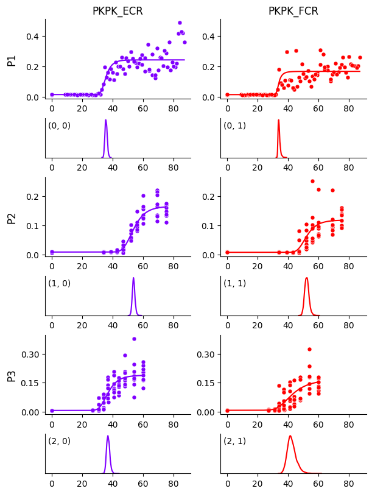
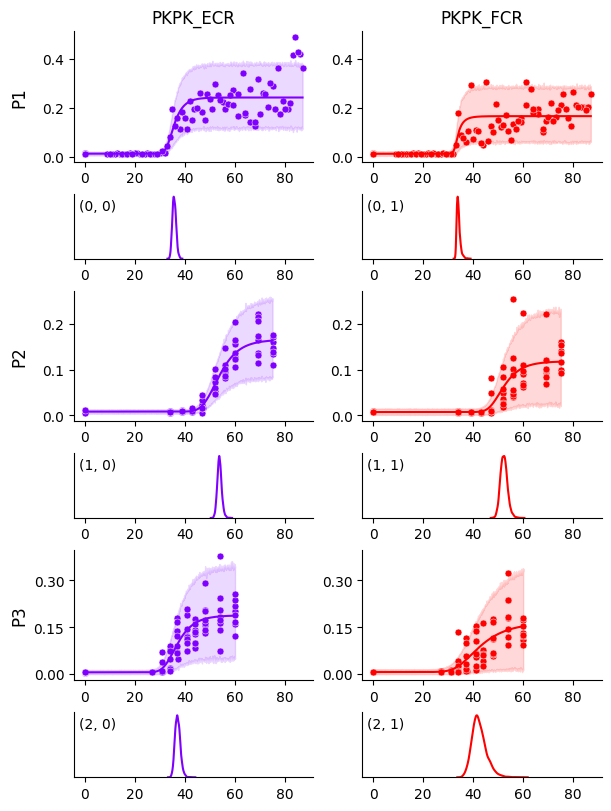

Using Logistic-5#
We use the same dataset from Getting Started with a five-parameter logistic-5 function.
import os
import pandas as pd
import hbmep as mep
url = "https://raw.githubusercontent.com/hbmep/hbmep/refs/heads/docs-data/data/mock_data.csv"
df = pd.read_csv(url)
Build the model#
model = mep.StandardHB()
# Point to the respective columns in dataframe
model.intensity = "TMSIntensity"
model.features = ["participant"]
model.response = ["PKPK_ECR", "PKPK_FCR"]
# Set the function
model._model = model.logistic5
Running the model#
# Process the dataframe
df, encoder = model.load(df)
# Run
mcmc, posterior = model.run(df=df)
# Check convergence diagnostics
summary_df = model.summary(posterior)
print(summary_df.to_string())
Show code cell output
2026-04-19 01:41:27,850 - hbmep.util.util - INFO - func:load took: 0.00 sec
2026-04-19 01:41:28,918 - hbmep.util.util - INFO - func:trace took: 1.07 sec
2026-04-19 01:41:28,918 - hbmep.model.base_model - INFO - Running...
Compiling.. : 0%| | 0/3000 [00:00<?, ?it/s]
Running chain 0: 0%| | 0/3000 [00:01<?, ?it/s]
Running chain 0: 5%|▌ | 150/3000 [00:04<00:53, 53.65it/s]
Running chain 0: 10%|█ | 300/3000 [00:05<00:32, 82.74it/s]
Running chain 0: 15%|█▌ | 450/3000 [00:06<00:22, 111.34it/s]
Running chain 0: 20%|██ | 600/3000 [00:07<00:19, 126.24it/s]
Running chain 0: 25%|██▌ | 750/3000 [00:08<00:15, 146.77it/s]
Running chain 0: 30%|███ | 900/3000 [00:09<00:13, 159.46it/s]
Running chain 0: 35%|███▌ | 1050/3000 [00:10<00:12, 161.49it/s]
Running chain 0: 40%|████ | 1200/3000 [00:10<00:10, 171.06it/s]
Running chain 0: 45%|████▌ | 1350/3000 [00:11<00:08, 185.99it/s]
Running chain 0: 50%|█████ | 1500/3000 [00:12<00:07, 197.91it/s]
Running chain 0: 55%|█████▌ | 1650/3000 [00:12<00:06, 198.44it/s]
Running chain 0: 60%|██████ | 1800/3000 [00:13<00:05, 212.29it/s]
Running chain 0: 65%|██████▌ | 1950/3000 [00:14<00:04, 219.40it/s]
Running chain 0: 70%|███████ | 2100/3000 [00:15<00:04, 190.71it/s]
Running chain 0: 75%|███████▌ | 2250/3000 [00:16<00:04, 174.14it/s]
Running chain 0: 80%|████████ | 2400/3000 [00:17<00:03, 166.47it/s]
Running chain 0: 85%|████████▌ | 2550/3000 [00:18<00:02, 162.86it/s]
Running chain 0: 90%|█████████ | 2700/3000 [00:19<00:01, 160.57it/s]
Running chain 0: 95%|█████████▌| 2850/3000 [00:20<00:00, 157.21it/s]
Running chain 0: 100%|██████████| 3000/3000 [00:21<00:00, 142.63it/s]
Running chain 2: 100%|██████████| 3000/3000 [00:21<00:00, 139.73it/s]
Running chain 1: 100%|██████████| 3000/3000 [00:21<00:00, 139.54it/s]
Running chain 3: 100%|██████████| 3000/3000 [00:21<00:00, 139.29it/s]
2026-04-19 01:41:50,732 - hbmep.util.util - INFO - func:run took: 22.88 sec
2026-04-19 01:41:50,857 - hbmep.util.util - INFO - func:summary took: 0.12 sec
mean sd hdi_2.5% hdi_97.5% mcse_mean mcse_sd ess_bulk ess_tail r_hat
a_loc 42.051 6.281 29.646 55.300 0.138 0.269 2864.0 1277.0 1.0
a_scale 13.068 7.704 4.772 28.420 0.211 0.428 2332.0 1758.0 1.0
b_scale 0.597 0.347 0.173 1.249 0.011 0.017 1228.0 1332.0 1.0
g_scale 0.012 0.005 0.006 0.023 0.000 0.000 948.0 776.0 1.0
h_scale 0.225 0.099 0.098 0.407 0.004 0.007 975.0 1047.0 1.0
v_scale 0.174 0.188 0.000 0.525 0.003 0.008 3709.0 2134.0 1.0
c₁_scale 2.922 2.658 0.047 8.296 0.048 0.047 2497.0 2860.0 1.0
c₂_scale 0.284 0.106 0.131 0.504 0.003 0.003 1187.0 1685.0 1.0
a[0, 0] 35.709 0.736 34.354 37.190 0.011 0.012 4527.0 2823.0 1.0
a[0, 1] 34.102 0.714 32.984 35.576 0.015 0.021 2541.0 1755.0 1.0
a[1, 0] 53.805 0.886 52.080 55.560 0.012 0.020 5796.0 2630.0 1.0
a[1, 1] 52.293 1.421 49.620 55.140 0.022 0.028 4568.0 2197.0 1.0
a[2, 0] 37.089 1.070 35.128 39.254 0.016 0.020 4950.0 2892.0 1.0
a[2, 1] 42.441 2.927 37.186 48.315 0.050 0.068 3942.0 2614.0 1.0
b_raw[0, 0] 0.881 0.422 0.155 1.659 0.010 0.007 1558.0 1416.0 1.0
b_raw[0, 1] 1.626 0.627 0.538 2.895 0.011 0.010 2709.0 1871.0 1.0
b_raw[1, 0] 0.431 0.205 0.096 0.833 0.005 0.004 1237.0 1418.0 1.0
b_raw[1, 1] 0.509 0.262 0.091 1.005 0.007 0.006 1330.0 1498.0 1.0
b_raw[2, 0] 0.519 0.256 0.118 1.033 0.006 0.004 1315.0 1355.0 1.0
b_raw[2, 1] 0.330 0.182 0.061 0.683 0.005 0.004 1402.0 1661.0 1.0
g_raw[0, 0] 1.226 0.387 0.493 1.992 0.012 0.007 966.0 786.0 1.0
g_raw[0, 1] 1.190 0.377 0.483 1.939 0.012 0.007 927.0 793.0 1.0
g_raw[1, 0] 0.758 0.242 0.305 1.229 0.008 0.004 949.0 817.0 1.0
g_raw[1, 1] 0.670 0.217 0.246 1.078 0.007 0.004 968.0 800.0 1.0
g_raw[2, 0] 0.571 0.202 0.196 0.970 0.006 0.003 1018.0 849.0 1.0
g_raw[2, 1] 0.641 0.231 0.230 1.108 0.007 0.004 999.0 837.0 1.0
h_raw[0, 0] 1.156 0.385 0.461 1.956 0.012 0.007 971.0 1044.0 1.0
h_raw[0, 1] 0.775 0.259 0.307 1.315 0.008 0.004 968.0 1020.0 1.0
h_raw[1, 0] 0.794 0.268 0.273 1.312 0.008 0.005 974.0 1102.0 1.0
h_raw[1, 1] 0.560 0.196 0.189 0.942 0.006 0.003 1042.0 1037.0 1.0
h_raw[2, 0] 0.921 0.313 0.317 1.513 0.010 0.006 1010.0 1075.0 1.0
h_raw[2, 1] 0.801 0.303 0.222 1.362 0.009 0.005 1114.0 1132.0 1.0
v_raw[0, 0] 0.682 0.530 0.000 1.706 0.007 0.008 3492.0 1649.0 1.0
v_raw[0, 1] 0.668 0.541 0.000 1.735 0.008 0.008 3223.0 1923.0 1.0
v_raw[1, 0] 0.795 0.588 0.002 1.940 0.008 0.009 3233.0 1934.0 1.0
v_raw[1, 1] 0.715 0.558 0.000 1.806 0.008 0.010 3635.0 1938.0 1.0
v_raw[2, 0] 0.745 0.578 0.000 1.879 0.009 0.010 2727.0 1344.0 1.0
v_raw[2, 1] 0.723 0.560 0.001 1.837 0.008 0.009 3315.0 1849.0 1.0
c₁_raw[0, 0] 0.916 0.605 0.026 2.102 0.009 0.009 3457.0 2080.0 1.0
c₁_raw[0, 1] 0.946 0.607 0.049 2.117 0.009 0.009 3593.0 2254.0 1.0
c₁_raw[1, 0] 0.681 0.603 0.001 1.843 0.011 0.009 2158.0 2267.0 1.0
c₁_raw[1, 1] 0.820 0.594 0.007 1.958 0.009 0.009 3542.0 2156.0 1.0
c₁_raw[2, 0] 0.318 0.481 0.002 1.422 0.011 0.010 1411.0 3415.0 1.0
c₁_raw[2, 1] 0.760 0.591 0.006 1.913 0.008 0.009 3537.0 2089.0 1.0
c₂_raw[0, 0] 0.321 0.119 0.123 0.554 0.003 0.003 1238.0 2006.0 1.0
c₂_raw[0, 1] 0.518 0.185 0.213 0.899 0.005 0.003 1256.0 1840.0 1.0
c₂_raw[1, 0] 0.315 0.124 0.107 0.550 0.003 0.002 1174.0 2100.0 1.0
c₂_raw[1, 1] 0.921 0.315 0.369 1.537 0.008 0.005 1358.0 1879.0 1.0
c₂_raw[2, 0] 1.244 0.464 0.485 2.192 0.010 0.007 1898.0 2053.0 1.0
c₂_raw[2, 1] 1.423 0.470 0.559 2.295 0.012 0.007 1365.0 1897.0 1.0
Visualizing the curves#
# Create prediction dataframe
prediction_df = model.make_prediction_dataset(df=df, num_points=1000)
# Use the model to predict on the prediction dataframe
predictive = model.predict(df=prediction_df, posterior=posterior)
# Create the output directory
current_dir = os.getcwd()
output_dir = os.path.join(current_dir, "hbmep-using-logistic5")
os.makedirs(output_dir, exist_ok=True)
# Plot estimated curves
output_path = os.path.join(output_dir, "curves.pdf")
model.plot_curves(
df=df,
prediction_df=prediction_df,
predictive=predictive,
posterior=posterior,
encoder=encoder,
output_path=output_path
)

We see that the curve for participant P1 and muscle FCR is no longer biased by those few data points, compared to Getting Started. This becomes even clearer when we plot the HDIs around the curves below.
# Plot observations HDI
output_path = os.path.join(output_dir, "obs_hdi.pdf")
model.plot_curves(
df=df,
prediction_df=prediction_df,
predictive=predictive,
posterior=posterior,
encoder=encoder,
output_path="mixture_obs_hdi.pdf",
predictive_hdi_var=mep.site.obs,
predictive_hdi_prob=0.95
)

Accessing parameters#
In this model, the parameter a corresponds to the \(S_{50}\) and can be accessed as below.
# S50 parameter
a = posterior[mep.site.a]
print(a.shape)
(4000, 3, 2)